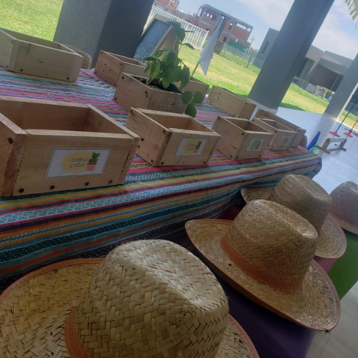
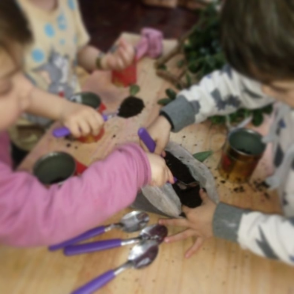
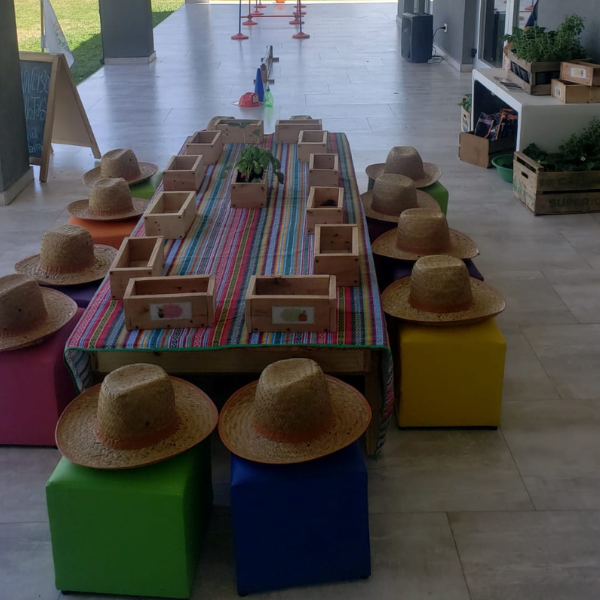
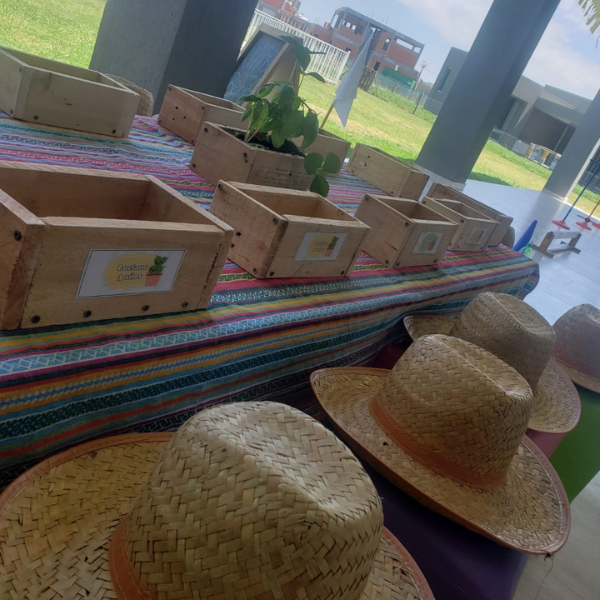
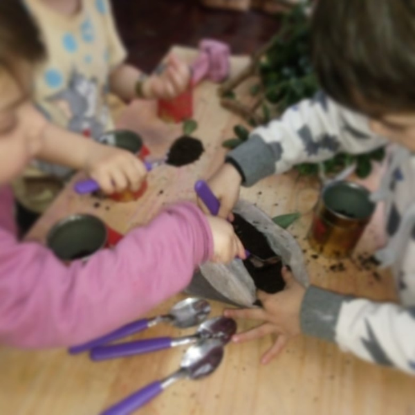
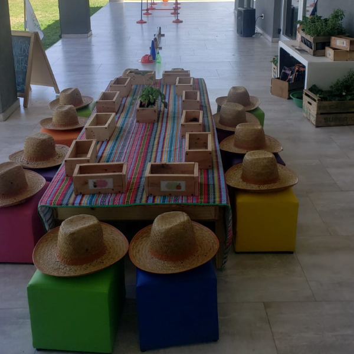

Animaciones, Talleres y Espectáculos
Te invitamos a descubrir nuestras animaciones, talleres y espectáculos, donde el arte, el juego y el cuidado del planeta se combinan para crear experiencias inolvidables. Cada evento está diseñado con creatividad y dedicación, adaptándose a distintas edades, intereses y necesidades. Conocé los detalles que hacen de cada una de nuestras propuestas una ocasión especial, inspirando, divirtiendo y conectando con los valores de Universo Bellotas.
Animaciones
Animaciones 1 a 3 años
Una animación pensada con amorosidad y respeto, ideal para los más pequeños. Juegos sensoriales, burbujas, baile con cintas y cuentos crean un ambiente seguro y estimulante. Las familias pueden participar activamente o acompañar como espectadores...¿Listos para descubrir más?
Leer Más
Animaciones 3 a 5 años
Diversión asegurada con juegos de memoria, circuitos de obstáculos, títeres y más. Animaciones con temáticas como piratas, princesas y otros cuentos, espacial, circo o exploradores. Diseñadas para estimular la imaginación, la psicomotricidad y la cooperación...¿Listos para descubrir más?
Leer MásAnimaciones 5 a 7 años
Juegos más desafiantes para niños con mayor autonomía. Se agregan actividades como: Búsqueda del tesoro, circuitos, carreras, mímica y acertijos. Juegos cooperativos y coordinación, temáticas especiales como “Máximo Adrenalina"...¿Listos para descubrir más?
Leer Más
Animaciones 7 a 12 años
Experiencias interactivas y recreativas con mucha onda: retos deportivos, teatro, ciencia y baile. Temáticas especiales como "Locuras de Laboratorio", "De Película" y "Pop & Rock". Juegos creativos y participativos para desafiar la imaginación y divertirse...¿Listos para descubrir más?
Leer MásTalleres

Talleres de Reciclado
Descubrí talleres únicos donde el arte y el reciclaje se combinan para crear nuevas formas de jugar y expresarse. A través de materiales reutilizados, los niños y niñas desarrollan su imaginación mientras aprenden sobre el cuidado del planeta. ¡Sumate y descubrí cómo transformar lo cotidiano en arte!...¿Listos para descubrir más?
Leer MásTalleres de Huerta
Un espacio donde los niños y niñas descubren el mundo de la naturaleza a través del juego. Aprenden sobre siembra, compost y el ciclo de las plantas, experimentando con la tierra y las semillas. Una propuesta para conectar con el ambiente y fomentar hábitos sustentables. ¡Sumate a cultivar juntos!...¿Listos para descubrir más?
Leer MásTalleres de Arte y Creatividad
Talleres donde el arte y el entorno natural se fusionan para despertar la creatividad. A través de elementos como hojas, ramas, semillas y piedras, los niños y niñas experimentan con texturas y colores, creando obras únicas mientras exploran la belleza del mundo que los rodea. ¡Sumate a esta experiencia sensorial!...¿Listos para descubrir más?
Leer MásTaller de Burbujas
Un espacio donde niños y niñas exploran la magia de las burbujas a través del juego y la experimentación. Aprenden a crear burbujas gigantes, descubrir su composición y jugar con formas y tamaños. Una propuesta interactiva que combina diversión, ciencia y asombro. ¡Sumate a soplar y crear!...¿Listos para descubrir más?
Leer MásEspectáculos
SelvAventuras
Una expedición a la selva misionera donde descubrimos la flora y fauna a través de leyendas, títeres y juegos. Los niños exploran la biodiversidad y comprenden la importancia de su preservación. Entre leyendas, títeres, música y juegos.....
Leer Más
EcoPayasadas
A puro humor, burbujas y acrobacias, este espectáculo nos enseña las 3R Reducir, Reutilizar y Reciclar. A través de situaciones cómicas, el público se involucra activamente y aprende a generar menos desperdicios. Música y Juegos.
Leer MásLeyendas de Pacha
Un personaje muy especial acompaña al público en un recorrido por Argentina, contando leyendas tradicionales que resaltan la relación entre la naturaleza y la cultura. Una aventura llena de relatos, canciones y conciencia ecológica.
Leer MásLa Leyenda del Bosque Verde
En un reino lejano, un temible dragón amenaza el Bosque Verde. Con humor, aventuras y la emotiva musicalización en vivo de una violinista, esta historia medieval invita a reflexionar sobre el cuidado del planeta en una experiencia única y envolvente.
Muy Pronto